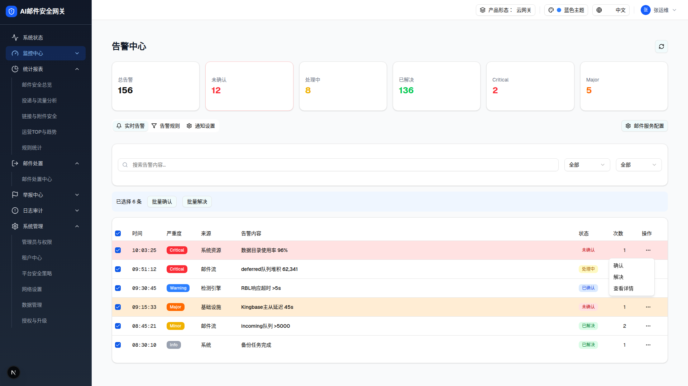

| 所属组件 | 2.2 实时告警 Tab |
| 主文件 | monitor-alerts/index.html |
| 触发路径 | 层级0 → 点击首行行尾 MoreHorizontal（ghost icon 按钮）→ Radix DropdownMenu 展开（align=end） |

| 菜单项 | i18n key | onClick | 预期行为（未实现） |
|---|---|---|---|
| 确认 | monitor.action.confirm | 无（差异 D-02） | 未确认 → 已确认 |
| 解决 | monitor.action.resolve | 无 | 任意状态 → 已解决 |
| 查看详情 | monitor.action.viewDetail | demo 无（v2 已定目标行为） | 【目标行为·2026-07-22 用户决定】打开告警详情抽屉（Sheet 右侧，展示该条告警完整信息，详见主文件 §3.3） |
| 比对项 | demo 实际 DOM | 提取的 HTML | 是否一致 |
|---|---|---|---|
| 菜单项数（role=menuitem） | 3 | 3 | ✅ |
| 菜单项文案 | 确认 / 解决 / 查看详情 | 同 | ✅ |
| 触发器 | ghost icon 按钮（MoreHorizontal w-4 h-4） | 同 | ✅ |